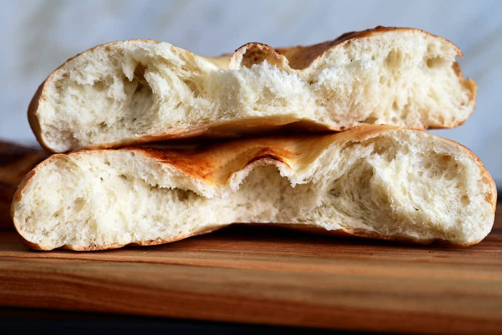
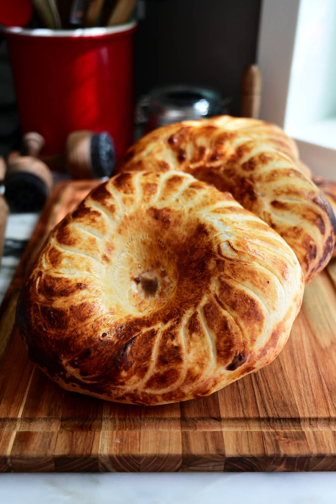

There are many types of Uzbek bread, obi non is just one of them, though it's the most common bread there. Every region in Uzbekistan, if not every town, has its own style of obi non. Obi non can be super plain - made with just flour, water, yeast, and salt - or it can incorporate shortening, butter, lamb fat, meat, raisins, nuts, sesame seeds, and more.

Personally, I like a particular type of obi non - plain but slightly sweet, chewy, soft but with a crispy bottom that they get after baking inside clay ovens called tandyr (tandir). I had a crazy idea to build a tandyr in my backyard but after many experiments, I am happy with the results I get from my oven.
The trick is to use a thick baking stone and use convection. Convection is the key to getting a nice color and crust similar to that of tandyr. It's about the airflow. Without it, the color and the texture of the crust are quite different from tandyr obi non.
While this Uzbek bread recipe may be different from many recipes out there, to me it's as good as it gets. I am talking about the recipe itself and the baking method. Really, I think it rivals tandyr Uzbek bread. You have to try it and be the judge. Many of you may not have experienced Uzbek bread yet, it doesn't matter, you are in for a big surprise. I have no doubt that you will love this bread.
The ingredients in this recipe are very basic and common: